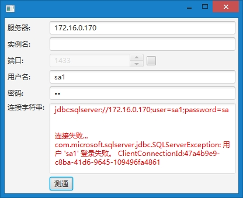
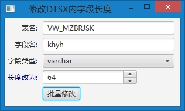
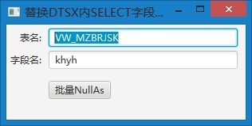

如果运行下述工具过程中出现问题请:
检查logs路径下对应的*.html日志文件, 根据警告或错误信息来修改程序运行环境
如果仍然不能解决问题，请将logs目录打包, 随问题描述和截图发往有关人员
日志级别说明:
改表字段长度:
//将表ZY_BRSYK中字段pzh2最大长度设为32
alter table ZY_BRSYK alter column pzh2 varchar(32);
添加TimeTemp字段语句:
//TODO 这里请帮忙添加一下
命令行窗口键入命令检查系统已经安装jre环境在1.8版本以上
java -version
如果该命令执行没有提示任何有关java的版本信息，请根据"我的电脑-属性"查看Windows操作系统类型。如果是64位的请安装64位JRE8, 如果是32位请安装32位JRE8。可直接从Oracle官方网站下载最新版JRE。
配置config/etlDatabase.xml文件，设定数据库的服务器、端口、用户名、密码、实例名、数据库名
执行功能
生成配置文件:
字段差异分析:
自动修正字段长度问题:
SQLServer测通工具:

注意：SQLServer在使用非默认实例时端口可能不是1433，此时应保持端口输入框是非可用状态。除非您清楚知道正确的端口号码是多少，可以勾选端口输入框后的复选框，并输入正确的端口号。
DTSX字段长度批量修改工具：
第一步: 拷贝包含*.dtsx的目录例如HOSPITAL_DW目录到当前路径下
第二步: 运行"dtsx_字段长度.bat", 看到如下界面:

DTSX字段替换为NULL AS工具:
第一步: 拷贝包含*.dtsx的目录例如HOSPITAL_DW目录到当前路径下
第二步: 运行"dtsx_字段NullAs.bat", 看到如下界面:

20170623